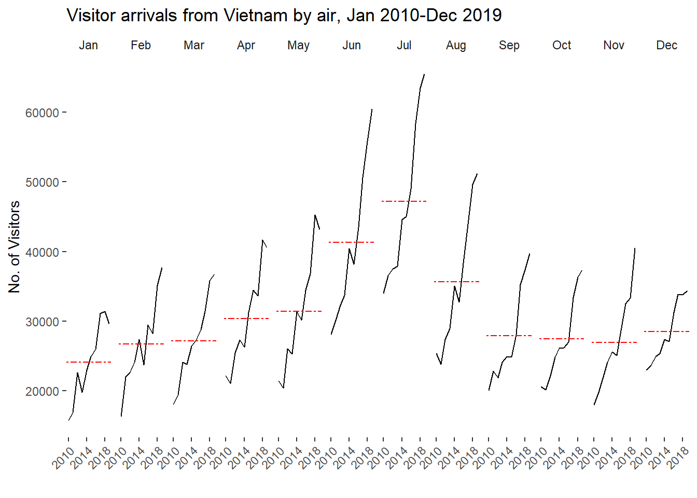
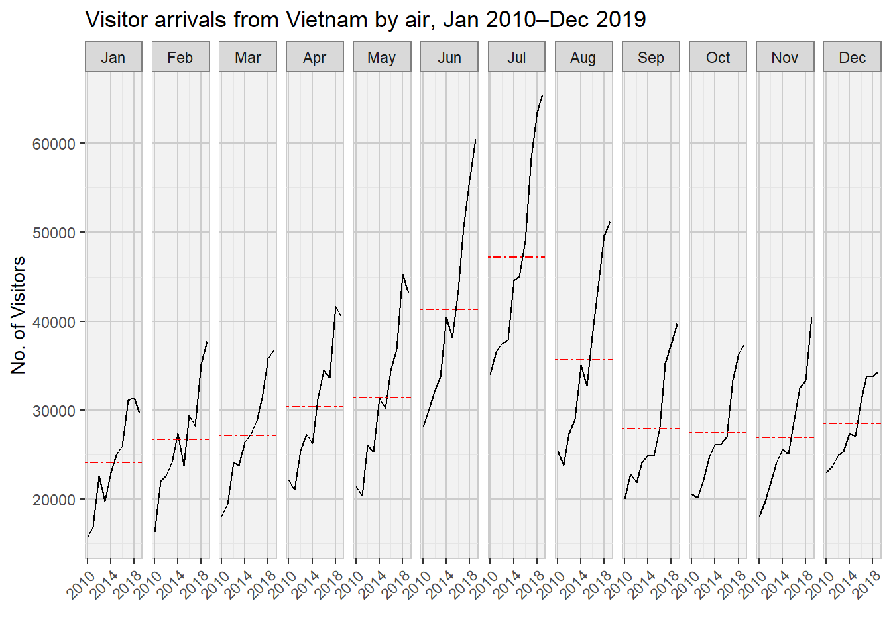
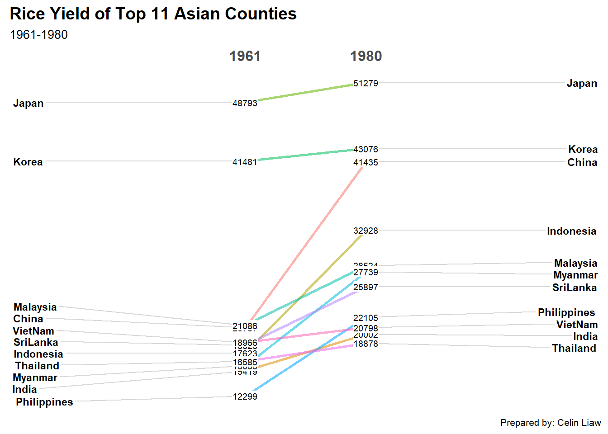

Code
pacman::p_load(scales, viridis, lubridate, ggthemes,
gridExtra, readxl, knitr, data.table,
CGPfunctions, ggHoriPlot, tidyverse)By the end of this hands-on exercise, the following data visualisation should be created using R packages:
plotting a calendar heatmap by using ggplot2 functions
plotting a cycle plot using ggplot2 function
plotting a slopegraph
plotting a horizon chart
Write a code chunk to check, install and launch the following R packages: scales, viridis, lubridate, ggtheme, gridExtra, readxl, knitr, data.table and tidyverse
pacman::p_load(scales, viridis, lubridate, ggthemes,
gridExtra, readxl, knitr, data.table,
CGPfunctions, ggHoriPlot, tidyverse)By the end of of this section, the following will be achieved:
plot a calendar heatmap by using ggplot2 functions and extension
to write function using R programming
to derive specific data and time related field by using base R and lubridate packages
to perform data preparation task by using tidyr and dplyr packages
For the purpose of this hands-on exercise, eventlog.csv file will be used. This data file consists of 199,999 rows of time-series cyber attack records by country,
First, I will use the coded chunk below to import eventlog.csv file into R environment and the data frame will be named as attacks.
attacks <- read_csv("data/eventlog.csv")This function kable() can be used to review the structure of the imported data frame.
kable(head(attacks))| timestamp | source_country | tz |
|---|---|---|
| 2015-03-12 15:59:16 | CN | Asia/Shanghai |
| 2015-03-12 16:00:48 | FR | Europe/Paris |
| 2015-03-12 16:02:26 | CN | Asia/Shanghai |
| 2015-03-12 16:02:38 | US | America/Chicago |
| 2015-03-12 16:03:22 | CN | Asia/Shanghai |
| 2015-03-12 16:03:45 | CN | Asia/Shanghai |
There are three columns, namely timestamp, source_country and tz.
timestamp field stores data-time values in POSIXct format
source_country field stores the source of the attack. It is in ISO 3166-1 alpha-2 country code
tz field stores time zone of the source IP address
Step 1: Deriving weekday and hour of days fields
Before we plot the calendar heatmap, two new fields namely wkday and hour need to be derived. In this step, we will write a function to perform the task.
make_hr_wkday <- function(ts, sc, tz) {
real_times <- ymd_hms(ts,
tz = tz[1],
quiet = TRUE)
dt <- data.table(source_country = sc,
wkday = weekdays(real_times),
hour = hour(real_times))
return(dt)
}ymd_hms() and hour() are from {lubridate} package, andweekdays() is a base R function.Step 2: Deriving the attacks tibble data frame
wkday_levels <- c('Saturday', 'Friday',
'Thursday', 'Wednesday',
'Tuesday', 'Monday',
'Sunday')
attacks <- attacks %>%
group_by(tz) %>%
do(make_hr_wkday(.$timestamp,
.$source_country,
.$tz)) %>%
ungroup() %>%
mutate(wkday = factor(
wkday, levels = wkday_levels),
hour = factor(
hour, levels = 0:23))Besides extracting the necessary data into attacks data frame, mutate() of dpylr package is used to convert wkday and hours fields into factor so they’ll be ordered when plotting
Table below shows the tidy tibble after processing.
kable(head(attacks))| tz | source_country | wkday | hour |
|---|---|---|---|
| Africa/Cairo | BG | Saturday | 20 |
| Africa/Cairo | TW | Sunday | 6 |
| Africa/Cairo | TW | Sunday | 8 |
| Africa/Cairo | CN | Sunday | 11 |
| Africa/Cairo | US | Sunday | 15 |
| Africa/Cairo | CA | Monday | 11 |
grouped <- attacks %>%
count(wkday, hour) %>%
ungroup() %>%
na.omit()
ggplot(grouped,
aes(hour,
wkday,
fill = n)) +
geom_tile(color = "white",
size = 0.1) +
theme_tufte(base_family = "Helvetica") +
coord_equal() +
scale_fill_gradient(name = "# of attacks",
low = "sky blue",
high = "dark blue") +
labs(x = NULL,
y = NULL,
title = "Attacks by weekday and time of day") +
theme(axis.ticks = element_blank(),
plot.title = element_text(hjust = 0.5),
legend.title = element_text(size = 8),
legend.text = element_text(size = 6) )
A tibble data table called grouped is derived by aggregating the attack by wkday and hour fields
A new field called n is derived by using group_by() and count() functions
na.omit() is used to exclude missing value
geom_tile() is used to plot tiles (grids) at each x and y position
color and size arguments are used to specify the border color and line size of the tiles
theme_tufte() of ggthemes package is used to remove unnecessary chart junk. To learn which visual components fo the default ggplot2 have been excluded, this line can be commented out to examine the default plot
coord_equal() is used to ensure the plot will have an aspect ratio of 1:1
scale_fill_gradient() function is used to create a two colour gradient (low-high)
The count is then grouped by hour and wkday and plotted. Since there are values for every combination, there is no need to further preprocess the data.
To build multiple heatmaps for the top 4 countries with the highest number of attacks.
Step 1: Deriving attack by country object
In order to identify the top 4 countries with the highest number of attacks, you are required to do the following:
count the number of attacjs by country
calculate the percent of attacks by country
save the results in a tibble data frame
attacks_by_country <- count(
attacks, source_country) %>%
mutate(percent = percent(n/sum(n))) %>%
arrange(desc(n))Step 2: Preparing the tidy data fram
In this step, you are required to extract the attack records of the top 4 countries from attacks data frame and save the data in a new tibble data frame (i.e. top4_attacks).
top4 <- attacks_by_country$source_country[1:4]
top4_attacks <- attacks %>%
filter(source_country %in% top4) %>%
count(source_country, wkday, hour) %>%
ungroup() %>%
mutate(source_country = factor(
source_country, levels = top4)) %>%
na.omit()Step 3: Plotting Multiple Calendar Heatmap by using ggplot2 package
ggplot(top4_attacks,
aes(hour,
wkday,
fill = n)) +
geom_tile(color = "white",
size = 0.1) +
theme_tufte(base_family = "Helvetica") +
coord_equal() +
scale_fill_gradient(name = "# of attacks",
low = "sky blue",
high = "dark blue") +
facet_wrap(~source_country, ncol = 2) +
labs(x = NULL, y = NULL,
title = "Attacks on top 4 countries by weekday and time of day") +
theme(axis.ticks = element_blank(),
axis.text.x = element_text(size = 7),
plot.title = element_text(hjust = 0.5),
legend.title = element_text(size = 8),
legend.text = element_text(size = 6) )
In this section, a cycle plot showing the time series patterns and trend of visitor arrivals from Vietnam will be shown using ggplot2 functions
For the purpose of this hands-on exercise, arrivals_by_air.xlsx will be used.
air <- read_excel("data/arrivals_by_air.xlsx")Two new fields called month and year are derived from Month-Year field.
air$month <- factor(month(air$`Month-Year`),
levels=1:12,
labels=month.abb,
ordered=TRUE)
air$year <- year(ymd(air$`Month-Year`))Vietnam <- air %>%
select(`Vietnam`,
month,
year) %>%
filter(year >= 2010)hline.data <- Vietnam %>%
group_by(month) %>%
summarise(avgvalue = mean(`Vietnam`))windowsFonts(Helvetica = windowsFont("Helvetica"))ggplot() +
geom_line(data=Vietnam,
aes(x=year,
y=`Vietnam`,
group=month),
colour="black") +
geom_hline(aes(yintercept=avgvalue),
data=hline.data,
linetype=6,
colour="red",
size=0.5) +
facet_grid(~month) +
labs(axis.text.x = element_blank(),
title = "Visitor arrivals from Vietnam by air, Jan 2010-Dec 2019") +
xlab("") +
ylab("No. of Visitors") +
theme_tufte(base_family = "Helvetica")
In the code above, the x-axis is not visible, so i have made certain changes by reducing the number of breaks in between the x axis and slanting the words to a certain angle.
ggplot() +
geom_line(data = Vietnam,
aes(x = year,
y = `Vietnam`,
group = month),
colour = "black") +
geom_hline(data = hline.data,
aes(yintercept = avgvalue),
linetype = 6,
colour = "red",
size = 0.5) +
facet_grid(~month) +
labs(title = "Visitor arrivals from Vietnam by air, Jan 2010-Dec 2019") +
xlab("") +
ylab("No. of Visitors") +
scale_x_continuous(breaks = seq(2010, 2020, 4)) + # Fewer ticks
theme_tufte(base_family = "Helvetica") +
theme(axis.text.x = element_text(angle = 45, hjust = 1)) # Rotate
As the grey boxes are not showing even after adding the Helvetica, some panels are added instead.
windowsFonts(Arial = windowsFont("Arial"))
ggplot() +
geom_line(data = Vietnam,
aes(x = year,
y = `Vietnam`,
group = month),
colour = "black") +
geom_hline(data = hline.data,
aes(yintercept = avgvalue),
linetype = 6,
colour = "red",
size = 0.5) +
facet_wrap(~month, nrow = 1) +
labs(title = "Visitor arrivals from Vietnam by air, Jan 2010–Dec 2019") +
xlab("") +
ylab("No. of Visitors") +
scale_x_continuous(breaks = seq(2010, 2020, 4)) +
theme_tufte(base_family = "Arial") + # Use Arial for Windows compatibility
theme(
panel.background = element_rect(fill = "grey95", colour = "grey80"),
panel.grid.major = element_line(colour = "grey80"),
panel.grid.minor = element_line(colour = "grey90"),
strip.background = element_rect(fill = "grey85", colour = "grey50"),
axis.text.x = element_text(angle = 45, hjust = 1)
)
rice <- read_csv("data/rice.csv")rice %>%
mutate(Year = factor(Year)) %>%
filter(Year %in% c(1961, 1980)) %>%
newggslopegraph(Year, Yield, Country,
Title = "Rice Yield of Top 11 Asian Counties",
SubTitle = "1961-1980",
Caption = "Prepared by: Celin Liaw")
For effective data visualistion design, factor() is used to convert the value type of Year field from numeric to factor